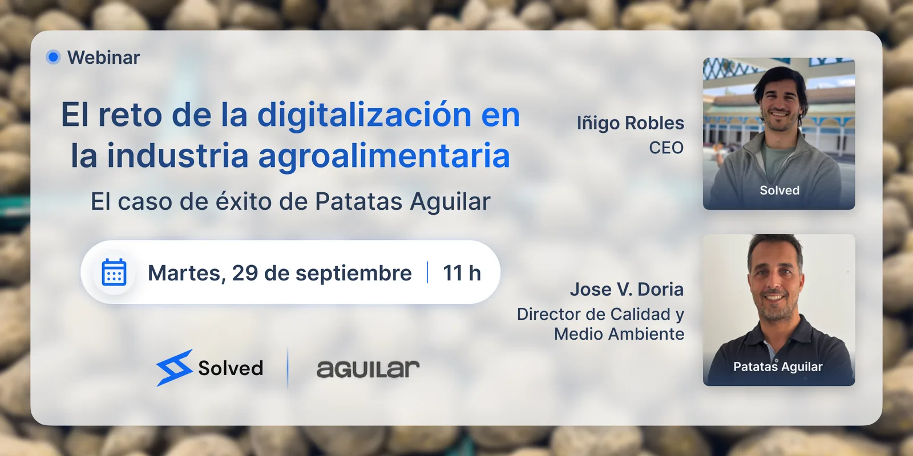
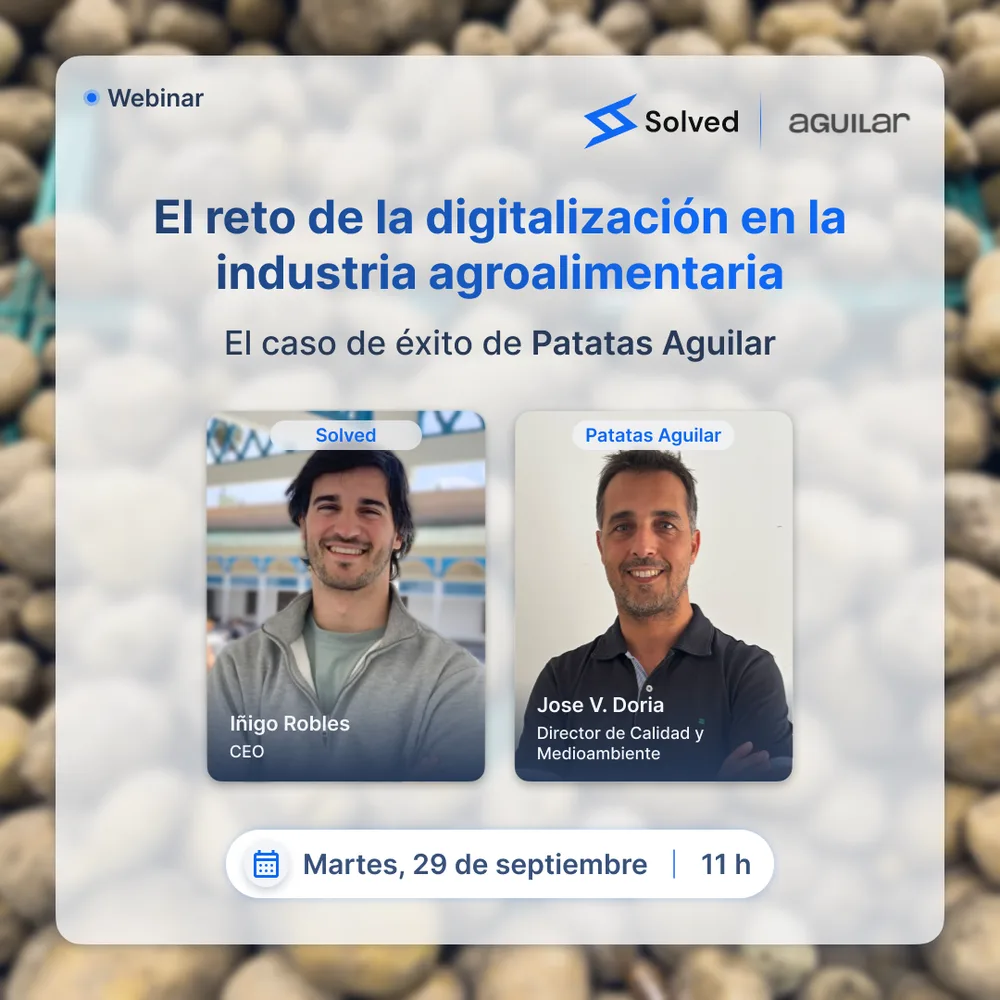

Webinar Solved El caso de éxito de Patatas Aguilar
El reto de la digitalización en la industria agroalimentaria
Iñigo Robles (CEO de Solved) y Jose V. Doria (director de Calidad y Medioambiente de Patatas Aguilar) cuentan, en directo, cómo Patatas Aguilar digitalizó el control de calidad de su planta con trazabilidad completa.
- Martes, 29 de septiembre de 2026
- 11:00h · Online
- Gratuito, con turno de preguntas

Qué se cuenta en el webinar
Un caso real, explicado por quien lo ha vivido en planta, no una demo genérica del producto.
De dónde partía Patatas Aguilar
El registro en papel y Excel que usaban antes, y los problemas de trazabilidad y tiempo que arrastraban.
Cómo digitalizaron sus registros
Qué controles y checklists llevaron primero a Solved, y cómo lo desplegaron en planta desde móvil y tablet.
Resultados y aprendizajes
Qué ha cambiado en el día a día de calidad y producción, y qué harían distinto si empezasen hoy.
Ponentes
Iñigo Robles
CEO, Solved
Jose V. Doria
Director de Calidad y Medioambiente, Patatas Aguilar
Resérvate tu plaza
Martes, 29 de septiembre de 2026 · 11:00h · Online y gratuito. Te enviaremos el enlace de acceso por email.
